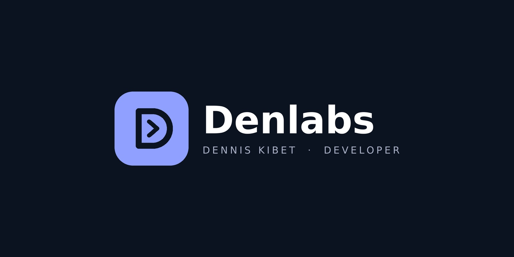

Thoughtful design
Clear interfaces that help people understand what to do next.

Full-stack web developer creating thoughtful interfaces, practical web applications, and digital solutions for real-world problems.
I enjoy turning ideas and everyday challenges into useful digital products. My work combines frontend design, application logic, and database development.
From ride-booking concepts to HR management and agricultural platforms, I focus on building systems around real needs, with usability and maintainability in mind.
Discover my projects ↗Clear interfaces that help people understand what to do next.
Structured code and useful functionality, built for real needs.
Learning, testing, refining, and improving with every project.
A practical foundation for building responsive interfaces and database-driven applications.
Building clear, responsive, accessible user interfaces.
Creating application logic and database-powered features.
Organizing code, tracking changes, and preparing projects for release.
A selection of web systems I'm developing to solve practical challenges through thoughtful design and technology.
 01
In development
01
In development
A web-based boda boda ride-booking concept designed to connect passengers with nearby riders in Eldoret, Kenya.
Passengers and boda boda riders need a more organized way to request rides, coordinate pickups, and understand their fares.
Design a booking workflow that connects customers with available riders, supports rider approval, and calculates fares using configurable location-based rates.
Role-based workflows, responsive interfaces, database design, and the coordination of ride requests.
Scope describes the intended system; integrations and live ride operations should be marked complete only after implementation and testing.
 02
In development
02
In development
A human resource management system concept for organizing employee records and supporting county HR workflows.
HR teams need structured ways to manage employee information, attendance, leave requests, and payroll workflows without relying on disconnected records.
Develop a centralized portal with role-specific access for HR administrators, supervisors, and employees.
Relational database design, authentication, permissions, form validation, and maintainable PHP modules.
This is a project in development, not a claim of deployment or adoption by the county government.
 03
In development
03
In development
A digital agriculture ecosystem concept connecting farmers with agricultural advisers, input suppliers, and market opportunities.
Farmers can face difficulties finding reliable agricultural guidance, trusted farm inputs, and suitable markets for their produce.
Build a digital platform that brings agricultural services and relevant connections into one accessible experience.
User journeys, accessible interface design, modular front-end development, and future database integration.
Features should be presented as planned until their working implementations have been verified.
Good development is more than writing code. It means understanding the problem, building thoughtfully, testing carefully, and improving what ships.
Clarify goals, users, requirements, and priorities before building.
Build a clear interface and implement features in manageable steps.
Check responsiveness, usability, errors, and the important user journeys.
Publish verified work, document it, and iterate based on feedback.
Responsive, professional websites designed to communicate clearly and work across devices.
↗Database-driven applications and management systems tailored to practical workflows.
↗Clear technical documentation and structured content for digital and software projects.
↗Whether you need a website, a custom system, or help bringing an idea to life, I'd love to hear about it. Let's talk about what you're building.
Tell me what you have in mind. I'll get back to you so we can discuss the next steps.
A few details about your idea are enough to get the conversation started.